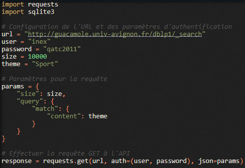
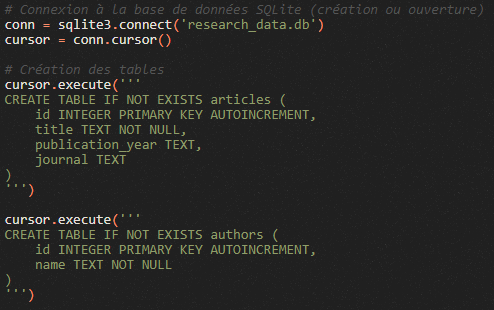
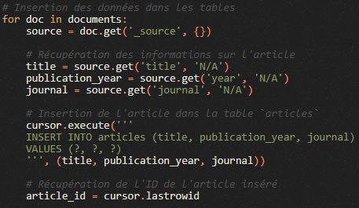
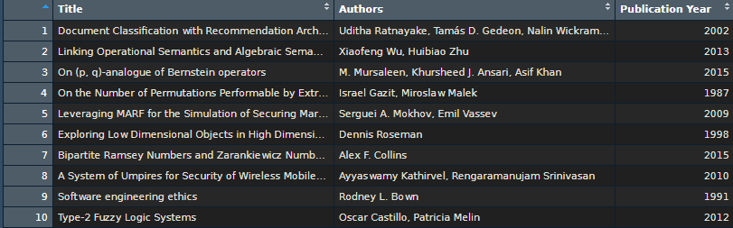

Dans le cadre de mon cursus en science des données, j'ai réalisé un projet de collecte, traitement et intégration de données bibliographiques en utilisant une API locale. Ce projet m'a permis de mettre en pratique mes compétences en Python, en gestion des bases de données et en manipulation de données.
L'objectif était de collecter des articles scientifiques sur un thème précis (j'ai choisi le Sport) à partir d'une API, puis de stocker ces informations dans une base de données relationnelle SQLite pour faciliter leur exploitation ultérieure.
Le processus a débuté par une requête à l'API à l'aide du module Python requests. Voici un extrait du code utilisé :

L'API est sous forme d'URL et nécessitait des identifiants de connexion donnés au préalable.
Après avoir reçu la réponse de l'API, les données ont été extraites et formatées pour être insérées dans une base de données SQLite. La structure de la base de données a été définie de la manière suivante :

Il y a ensuite l'insertion de données dans les tables:

Et j'ai eu comme résultat un tableau de 3 colonnes:
